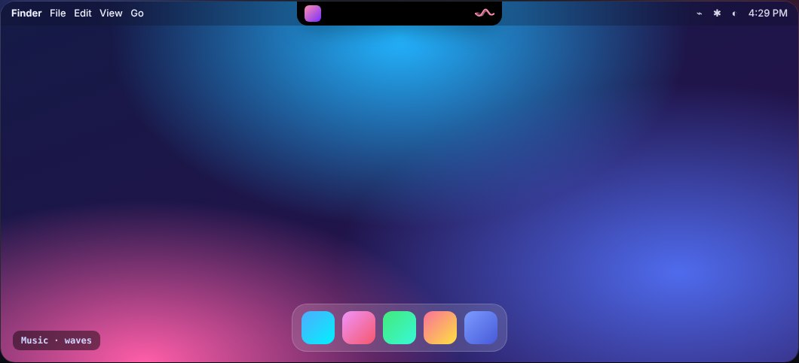
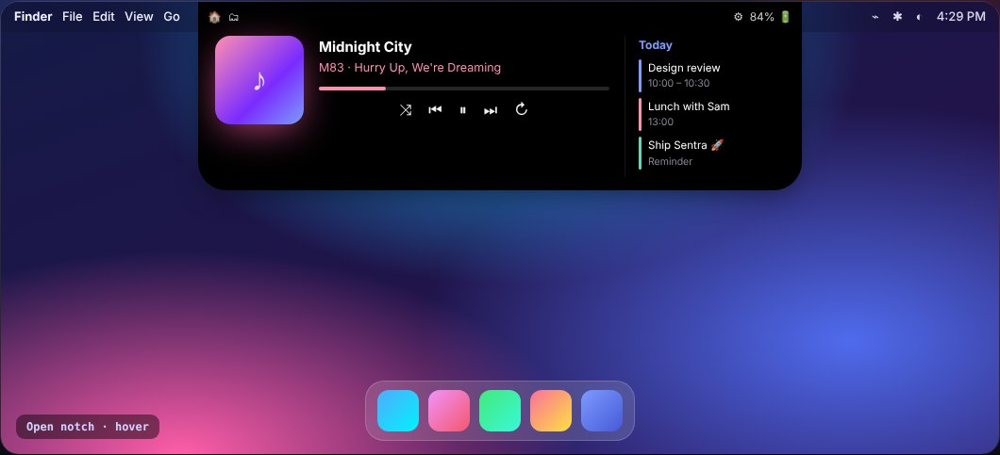
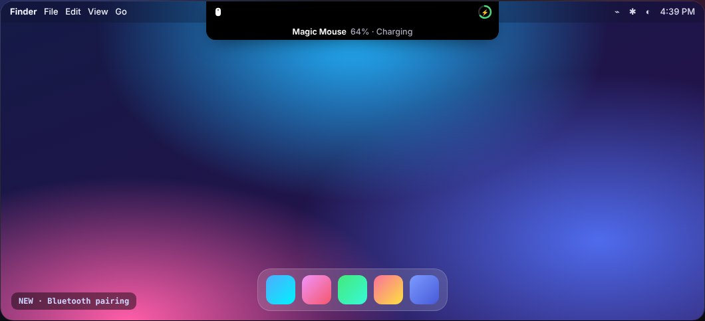
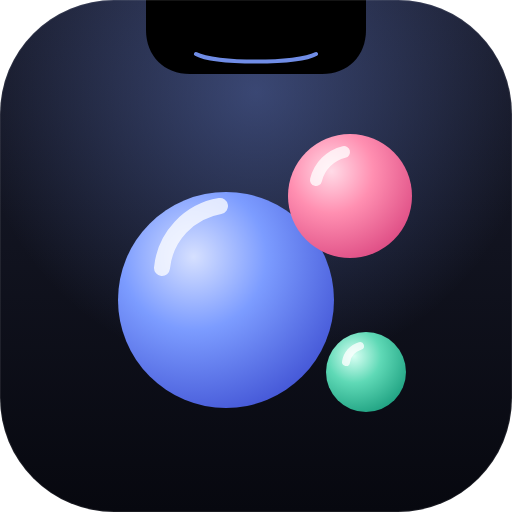

Sentra Notch turns the MacBook notch into a living control centre — music with flowing waves, smooth volume & brightness, devices that announce themselves, your day, your files. Hover and it opens.
Every live activity you love — plus new ones — tuned to animate in 2–3 seconds and get out of your way.
Turn on your Magic Mouse or pop open your AirPods — the notch spins its icon for two seconds, then shows exactly how much battery is left.
Music, volume, brightness, pairing, charging and the open notch — recorded straight from the demo.



Notch black, Glass or Aurora glow. Six accent colours or your own. Spectrum bars, waves, pulse — or little outline dancers that groove to your music.
Get SentraNotch.dmg and open Sentra Notch. It offers to move itself to Applications — one click and it's installed.
Right-click the app → Open (it's a free indie app, not notarized yet). Or run:xattr -dr com.apple.quarantine "/Applications/Sentra Notch.app"
That's it. Click ✨ in the menu bar for settings. Updates arrive inside the app — Settings → About → Check for Updates.
Yes — completely free and open source under the MIT License.
Yes. On external displays and Macs without a notch it draws a sleek virtual notch at the top of the screen.
Anything that shows in Control Centre: Apple Music, Spotify, YouTube and other sites in your browser, podcasts and more.
None to start. Calendar, Camera (mirror) and Accessibility (to replace Apple's volume pop-up) are optional and only asked when you turn those features on.
Yes. Turn on Accessibility for Sentra Notch (System Settings → Privacy & Security → Accessibility) and notifications, reminders and Clock alarms appear in the notch with a little ring animation.
Sentra Notch checks once a day. Every update is cryptographically signed and verified before it installs.

Free download. No account. No tracking.